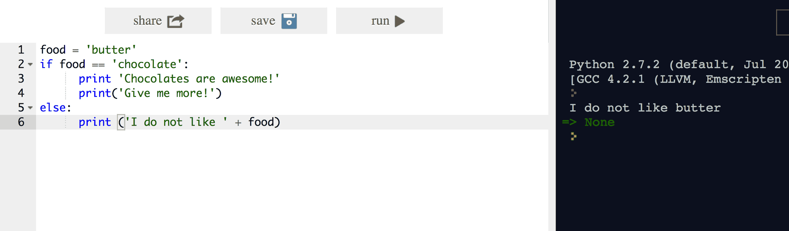

Some of Python's notable features:
Being an interpreted language, python doesn't require compilation. Code/Scripts are executed line by line. Unlike C++ or Java, python doesn't produce an object file or executable. We directly run the script on a python interpreter. In this code lab we will use an online interpreter available at repl.it
In the next step, we will dive right in and explore some basic syntax of python.
We'll start with some basic python syntax. What better way to begin than the classic "Hello World"? Head over to repl.it
On the prompt at the right, type in the following code.
print "Hello World!"
It should look like:
Press enter to run the line of code.
On running it, you should see a pretty boring hello world message in the console window.
You will also see => None this is the return value of the print statement, which is basically none.
Lets print a few more things to see how easy it is in python to display stuff. Try out the following:
print "Printing 3 times " * 3
print "Concatenating " + "Strings"
print "This is a string" + 'So is this!' Notice how " " and ' ' are inter-changable in python
The window on the right (in black) is the interpreter, and the left white editor, is the script editor.
Python Scripts are still run line by line, but you can write a long piece of code in a file and save it, much like a .c or .c++ file
The difference here is that the .py file (python scripts have a .py extension) is directly run on the interpreter, instead of compiling and then running.
Python is a dynamic, interpreted (bytecode-compiled) language. There are no type declarations of variables, parameters, functions, or methods in source code. This makes the code short and flexible, and you lose the compile-time type checking of the source code. Python tracks the types of all values at runtime and flags code that does not make sense as it runs.
Creating Variables is as simple as giving it a name and assigning a value. Python, unlike c++ or java doesn't require you declare variables in advance, before using it.
myVariable = "Something cool!"
The above code can be typed into interpreter, and this will store the string in variable called myVariable.
You can check what's stored by printing the variable using: print "myVariable Contains: " + myVariable
You can store other things in variables like integers, floating point values, boolean values, etc. Try the following:
x = 10 pi = 3.14 booleanVar = true type(x) type(pi) type(booleanVar)The above code will display the types of the 3 variables we create. type( ) is a function that can be used to check the type of a variable.
print 3+2print 3.14*2print 2**3print 10/5print 14.2/3.0print 10-5/2+4x = 24y = input("Enter a number:")print y
The code y = input("...") uses the input() function to store an integer into the variable y. input() takes 1 parameter, the prompt string to ask for input.
To store input for string variables, we can use raw_input("Input Prompt:") instead of just input("..")
One unusual Python feature is that the whitespace indentation of a piece of code affects its meaning. A logical block of statements such as the ones that make up a function/if condition/loop, etc should all have the same indentation, set in from the indentation of their parent function or "if" or whatever. If one of the lines in a group has a different indentation, it is flagged as a syntax error.
For example, consider the following if condition in python:
food = 'chocolate'
## print only if food is chocolate
if food == 'chocolate':
print 'Chocolates are awesome!'
print('Give me more!')
else:
print ('I do not like ' + food)
You can try it by pasting it in the script editor on the left, and clicking the run button.

The above image shows an example where we have stored 'butter' in food. Hence the if fails and else part is executed.
The '#' symbol can be used to write comments.
In Python, indentation matters a lot. Hence everything that is under the if under the same indentation, is part of the if block.
If conditions use boolean expressions who's result determines whether or not a piece of code is executed.
A boolean expression (or logical expression) evaluates to one of two states true or false. Python provides the boolean type that can be either set to False or True. Many functions and operations returns boolean objects.
The not keyword can also be used to inverse a boolean type.
not True will return False
The following values evaluate to False:
The <, <=, >, >=, ==, != operators compare the values of 2 objects and returns True or False.
>>> x = 2 >>> 1 < x < 3 True >>> 10 < x < 20 False >>> 3 > x <= 2 True >>> 2 == x < 4 TrueThe comparison is performed between each pair of terms to be evaluated. For instance in the first example, 1 < x is evaluated to True AND x < 3 is evaluated. It is not as if 1 < x is evaluated to True and then True < 3 is evaluated to True, Each term is evaluated once.
Logical Operators
| operators | descriptions |
|---|---|
| not x | Returns True if x is True, False otherwise |
| x and y | Returns x if x is False, y otherwise |
| x or y | Returns y if x is False, x otherwise |
Proceed to the next step.
Computers are often used to automate repetitive tasks. Repeating identical or similar tasks without making errors is something that computers do well and people do poorly. Repeated execution of a set of statements is called iteration. Python has two statements for iteration – the for statement, which we met last chapter, and the while statement. Before we look at those, we need to review a few ideas.
In Python, it is legal to make more than one assignment to the same variable. A new assignment makes an existing variable refer to a new value (and stop referring to the old value).
bruce = 5
print(bruce)
bruce = 7
print(bruce)
The above code will print 5 and then 7.
for loopfor loop is:
for LOOP_VARIABLE in SEQUENCE:
STATEMENTS
The loop variable is created when the for statement runs, so you do not need to create the variable before then. Each iteration assigns the the loop variable to the next element in the sequence, and then executes the statements in the body. The statement finishes when the last element in the sequence is reached.
You can use the in-built range() method to create a sequence. For example range(5) will give you a list from 0 to 4.
The code below prints 1 to 10.
for i in range(11):
print i
while loopwhile loop is:
while CONDITION:
STATEMENTS
number = 0
prompt = "What is the meaning of life, the universe, and everything? "
while number != "42":
number = input(prompt)
Notice that if number is set to 42 on the first line, the body of the while statement will not execute at all.
A short hand often used to update variables is of the form += or -= or *= etc, example: count += 1 is an abreviation for count = count + 1 .
Python has a built-in string class named "str" with many handy features (there is an older module named "string" which you should not use). String literals can be enclosed by either double or single quotes, although single quotes are more commonly used. Backslash escapes work the usual way within both single and double quoted literals -- e.g. \n \' \". A double quoted string literal can contain single quotes without any fuss (e.g. "I didn't do it") and likewise single quoted string can contain double quotes. A string literal can span multiple lines, but there must be a backslash \ at the end of each line to escape the newline. String literals inside triple quotes, """" or ''', can multiple lines of text.
Python strings are "immutable" which means they cannot be changed after they are created (Java strings also use this immutable style). Since strings can't be changed, we construct *new* strings as we go to represent computed values. So for example the expression ('hello' + 'there') takes in the 2 strings 'hello' and 'there' and builds a new string 'hellothere'.
Characters in a string can be accessed using the standard [ ] syntax, and like Java and C++, Python uses zero-based indexing, so if str is 'hello' str[1] is 'e'. If the index is out of bounds for the string, Python raises an error. The Python style (unlike Perl) is to halt if it can't tell what to do, rather than just make up a default value. The handy "slice" syntax (below) also works to extract any substring from a string. The len(string) function returns the length of a string. The [ ] syntax and the len() function actually work on any sequence type -- strings, lists, etc.. Python tries to make its operations work consistently across different types. Python newbie gotcha: don't use "len" as a variable name to avoid blocking out the len() function. The '+' operator can concatenate two strings. Notice in the code below that variables are not pre-declared -- just assign to them and go.
s = 'hi'
print s[1] ## i
print len(s) ## 2
print s + ' there' ## hi there
Unlike Java, the '+' does not automatically convert numbers or other types to string form. The str() function converts values to a string form so they can be combined with other strings.
pi = 3.14
##text = 'The value of pi is ' + pi ## NO, does not work
text = 'The value of pi is ' + str(pi) ## yes
For numbers, the standard operators, +, /, * work in the usual way. There is no ++ operator, but +=, -=, etc. work. If you want integer division, it is most correct to use 2 slashes -- e.g. 6 // 5 is 1 (previous to python 3000, a single / does int division with ints anyway, but moving forward // is the preferred way to indicate that you want int division.)
The "print" operator prints out one or more python items followed by a newline (leave a trailing comma at the end of the items to inhibit the newline). A "raw" string literal is prefixed by an 'r' and passes all the chars through without special treatment of backslashes, so r'x\nx' evaluates to the length-4 string 'x\nx'. A 'u' prefix allows you to write a unicode string literal (Python has lots of other unicode support features -- see the docs below).
raw = r'this\t\n and that'
print raw ## this\t\n and that
multi = """It was the best of times.
It was the worst of times. This is a multiline Comment"""
Here are some of the most common string methods. A method is like a function, but it runs "on" an object. If the variable s is a string, then the code s.lower() runs the lower() method on that string object and returns the result (this idea of a method running on an object is one of the basic ideas that make up Object Oriented Programming, OOP). Here are some of the most common string methods:
The "slice" syntax is a handy way to refer to sub-parts of sequences -- typically strings and lists. The slice s[start:end] is the elements beginning at start and extending up to but not including end. the Suppose we have s = "Hello"
The standard zero-based index numbers give easy access to chars near the start of the string. As an alternative, Python uses negative numbers to give easy access to the chars at the end of the string: s[-1] is the last char 'o', s[-2] is 'l' the next-to-last char, and so on. Negative index numbers count back from the end of the string
Lets try and solve an exercise:
Assume s is a string of lower case characters.
Write a program that counts up the number of vowels contained in the string s. Valid vowels are: 'a', 'e', 'i', 'o', and 'u'. For example, if s = 'azcbobobegghakl', your program should print:
Number of vowels: 5
The solution can be found in the next step.
The solution to the problem posed in the previous step, to find vowels in a string of lwercase characters:
s = raw_input("Enter a lowercase string:")
numVowels = 0
for char in s:
if char == 'a' or char == 'e' or char == 'i' \
or char == 'o' or char == 'u':
numVowels += 1
print 'Number of vowels: ' + str(numVowels)
Try and understand how this code works, and how the characters in s are being checked in the if condition.( the \ is used as our condition is split across lines)
Now try write a program to count the number of times the string "khmd" occurs in a string s. For example:
If s = "abczsdkhmdasdkhmdmlkwe", then your code should output:Number of khmd occurances: 2
Make sure you take input for s from the user using raw_input()
We will show you the solution to this problem after the next step where we will extend it slightly.
def compute_surface(radius):
from math import pi
return pi* radius * radius
To define a function, just precede the keyword def before the name of the function and add a column after it. The function definition is then followed by a block of statements.
The final line in the block of statement can start with the keyword return if you want to return something. If there is no return statement, the default behaviour of a function consists in returning the object None.
Can be called using surface = compute_surface(1.2)
Recall the strings question we posed in the previous step, to calculate number of occurrences of the string 'khmd' in a string s.
Now try and implement this using a function, that takes two parameters, the string s, and a string called key. Your function should return an integer, ie. the number of times key occurs in s.
You can find the solution to this in the next step, but we encourage you to try it on your own first.
def countkey(s,key):
count = 0
for i in range(len(s)):
if(s[i:].startswith(key)):
count+=1
return count
s = raw_input("Enter String:")
key = raw_input("Key: ")
print 'Number of times '+ key + ' occurs is: ' + str(countkey(s,key))
If time permits, we encourage you to try and solve this challenge, to which we will not be providing a solution in this session.
Longest substring in alphabetical order is: beggh
Longest substring in alphabetical order is: abc
You have now completed a basic introduction to Python! So far, We've covered:
While this isn't an in-depth introduction to python, we hope it has given you an idea as to how Python works, and how to write a few simple scripts using python.
We encourage you to explore additional resources and codelabs related to python.
Some resources you might like are: